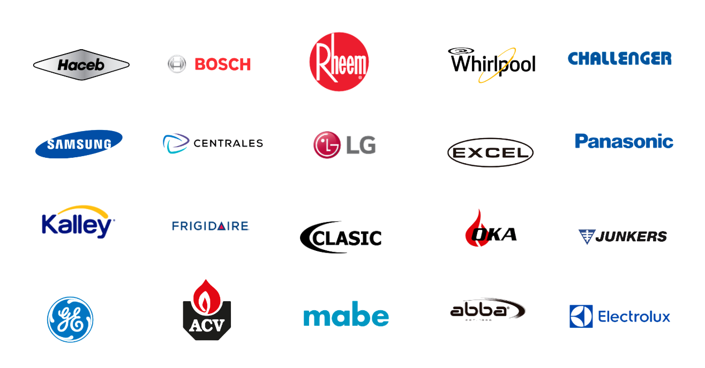

Neveras
No enfría, hace ruido, gotea o no prende. Diagnóstico y reparación en el sitio.
✓ Más de 15 años de experiencia
Reparamos neveras, lavadoras, secadoras, calentadores y estufas de todas las marcas. Vamos hasta la puerta de tu casa en Medellín y el Valle de Aburrá.
Reparamos tus electrodomésticos con repuestos originales y garantía
No enfría, hace ruido, gotea o no prende. Diagnóstico y reparación en el sitio.
No centrifuga, no desagua, no enciende o presenta fugas de agua.
No calienta, no gira o no seca correctamente la ropa.
Sin agua caliente, fallas de encendido o problemas de presión.
Quemadores que no encienden, fallas en el horno o fugas de gas.
Vamos hasta tu casa. No necesitas trasladar tu equipo a ningún taller.
Técnicos especializados en las principales marcas del mercado

La confianza de más de 15 años reparando electrodomésticos
Conocimiento técnico comprobado en todo tipo de electrodomésticos.
No te desplazas ni dejas tu equipo en un taller. Vamos hasta tu casa.
Evaluamos el daño y te explicamos qué tiene tu equipo antes de proceder.
Servicio garantizado utilizando únicamente repuestos originales.
Solucionamos la falla en la puerta de tu casa, sin largas esperas.
Haceb, LG, Bosch, Samsung, Mabe, Whirlpool y muchas más.
Estamos listos para ayudarte. ¡Escríbenos ahora!
Medellín y todo el Valle de Aburrá
Lunes a Sábado: 6:00 AM - 6:00 PM